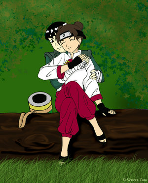

LeeTen
 De: La Frikipedia, la enciclopedia extremadamente seria.
De: La Frikipedia, la enciclopedia extremadamente seria.
«Mientras ese cejudo se aleje de mí, perfecto»
~ Sakura Haruno expresando su aficion al LeeTen
«¡Lee, por favor, vuelve conmigo!»
~ Sakura al darse cuenta después de que nadie más la quiere
«La genética no está de parte de sus futuros hijos ¬¬»
~ Ciéntifico tras imaginarse a un engendro cejudo vestido con mallas verdes y con coquitos en la cabeza
«Aparte de con Lee, puede acabar con Neji... Neji... esto... Neji... ¿He dicho que puede acabar con Lee?»
~ Fan de TenTen pensando en las posibilidades amorosas de su ídolo
«Y a todo esto ¿quien les pone los nombres a la parejas?»
~ Todo el mundo|Todos preguntandonos lo mismoo
«¡Es solo mia! ¡No permitiré que se vaya con ningún personaje y menos con Lee!»
~ Masashi Kishimoto|Masashi me subo en tu moto mientras abraza una muñeca de TenTen, su chica favorita)
«Con que no me emparejen con Gay-sensei Guy-sensei estoy más que servida »
~ Tenten viendo sus posibilidades en el fanfiction world|(¡Bien dicho!)
«Lee»
~ Tenten sobre (y algunas veces encima de)Rock Lee
LeeTen (pero mola más escribirlo con falta ortográfica: leeten): es una corriente, fenómeno, movimiento religioso, partido político, agrupación paramilitar, creencia, grupo terrorista, la verdad sobre el mal gusto, (y no se me ocurren más paridas) que apoya la relación sentimental entre Rock Lee y Tenten.
Origen
Todo se remonta a los exámenes de Chunnin del anime y manga de Naruto en donde se ve al feo ese que habla siempre gritando poniéndose cachondo con la tabla de planchar de color rosa ama emos. En ese instante no existía fuerza que apoyaran la causa hasta que, sin embargo, la sádica asesina de los coquitos mira la escena con cara de disgusto (supuestamente, celos). En ese instante, desde lo más profundo de los subforos marginales, surgió la especia conocida como el "LEETEN 4EVER!!!!!!!!!!!!!!" (Cuantos más signos de exclamación al final, más alto es el rango de frikismo)
Objetivo
El objetivo del leeten es crear a un ninja especializado en armamento y con un nivel de Taijutsu y artes marciales superior al de Bruce Lee... en pocas palabras, su finalidad es que nazca el némesis definitivo de Chuck Norris.
Características de un tipo LT
- Creen que Lee se enamorará de Tenten y serán felices por siempre.
- Odian a Sakura sobre todas las cosas por llamar la atención de Lee.
- Dibujan fanarts que demuestren su apoyo al LeeTen.
- Hacen AMVs que demuestren su apoyo a esta pareja.
- Hacen doujins y videos hentais donde se muestra a ambos en acto carnal/sadomasoquista. (Casi siempre suelen ir acompañados de Gai-sensei, lo que deja la piel de gallina T_T).
- Los fans del NejiTen les atacan con su semi-infinata galería de fan arts, pero los LeeTen contraatacan con imágenes del manga original.
- Tienen la imagen de TenTen sonrojada mientras Lee entrena guardada en favoritos.
- Odian el blanco y el rosa chicle.
- Afirman que Lee es el mejor chico de Naruto e insultan escribiendo con mayúsculos a aquellos que les recuerdan que Lee es más feo que una gamba cocida.
- Ven todos los capítulos de relleno, que es cuando salen XD
. -Esta esena fue censura de Naruto por lo que paso despues
Los diez mandamientos del buen fan del LeeTen
1.Te gustará el LeeTen mas que nada.
2.Te dejarás las cejas sin depilar y te peinarás de la manera más rara que se te ocurra.
3.Todos los días escupirás sobre la foto de Neji nada más levantarte.
4.Discutiras con los NejiTen en todas las paginas de internet y les mostrarás imagenes NejiHina para que se les derritan los ojos.
5.Escribirás al menos un fanfic en el que Lee se de cuenta de que Sakura es un putón.
6.Te harás amigo de los Narusaku, ya que son los que más apoyan esta relación.
7.Le harás un AMV/fanart/fanfic a tu amigo fan NejiHina, aunque no te guste la pareja.
8.Te veras todos los rellenos de Naruto.
9.Tendras mucho material hentai de TenTen, ya que el de Lee hace demasiado daño a la vista.
10.Tú no amas a Lee o a TenTen,en el fondo te la sopla que hagan. Pero cada vez que salen juntos en una escena pegas un grito de emoción XD.
Tipos LT
- LT cómicos: son los que apoyan la pareja solo porque se les hace graciosa. Son los típicos que han visto DEMASIADAS series americanas y saben que cuanto más en desacuerdo estén dos personajes, más posibilidades hay de que se líen.
- LT frikis: son los otakus feos que ven en TenTen a la única que no le recuerda a Lee que es horrendo.
- LT detectives: son los que recuerdan constantemente que Naruto es un shonen pero les da en la nariz que el sonrojo de TenTen en el entrenamiento de Lee es algo planeado por Kishimoto.
- LT que necesitan una vida ¡ya!: lo noemal es que enumeren una lista de al menos 50 razones y escenas del manga y el anime que desmuestran que esos dos deben estar juntos.
- LT pro-rellenuto: son los tipos que se han dado cuenta de que Lee y TenTen solo salen en los rellenos.
- LT por eliminación: son los tipos que les gusta el NaruSaku/SasuSaku y el NejiHina y por eliminación del resto de posibilidades se hacen fans del LeeTen.
- LT incestuosos: son los que creen deben quedar juntos solo porque su relación es la clásica de una hermana mayor cuidando del desastroso del pequeño.
- LT anti-Sakura: son los tipos que solo apoyan la pareja porque simplemente odian a la putilla peliteñida y quiren tirar mierda contra ella. Entre sus principales razones se encuentra que Sakura le quitase a TenTen la opción de ser adiestrada por su ídolo.
- LT anti-Neji: son los que ven a Neji como una copia barata de Sasuke con ojos blancos y desean quitárselo de enmedio, aunque eso suponga liarlo con su prima.
Aliados del LeeTen
- NejiHina
- NaruSaku
- SasuSaku
- InoNeji
- O aquellos que deseen ver solos a Neji Hyuuga y Sakura.
Enemigos del LeeTen
- LeeSaku
- NejiTen
- TemaTen
- LeeNeji
- ... no hay más O_O
Momentos que hacen valorar el LeeTen
- Capítulo 57: En el bosque, cuando Tenten encuentra a Lee KO, she piensa que Sakura es la mala influencia que ha conseguido hacerle perder.
- Capítulo 57: Cuando se van a marchar, y Lee promete a Sakrua que sera más fuerte tanto Naruto como TenTen parecen MUY molestos.
- Capítulo 74: En las preliminares para Chuunin, cuando TenTen pierde, Lee salta y la agarra.
- Capítulo 238: En el último capitulo de la primera temporasa, Lee está entrenado con Gai, y TenTen le mira con sonrisa de fan-girl.
- Ultimate Ninja 3: Lee tiene dos citas con TenTen, a las cuales llega tarde. Pero la segunda vez le trae un ramo de flores (razón por la cual no ha llegado a tiempo) y le da las gracias por estar a su lado.
- Capítulo 156: Cuando TenTen desaparece, Lee no cree que haya tenido ningún accidente ya que la considera una kunichi demasiado buena para ello. Esta sobrevaloración es considerada un gesto de afecto.
- Saga del país de la estrella: Esta saga es una de las que mas ejemplos del LeeTen han mostrado. Kishimoto creo una impresiosante cantidad de momentos cómicos para ambos. Nos mostró que sus habilidades y defectos eran muy similares, algo que explotaria mas tarde en Shippuden.
- Capítulo 220: TenTen le da una paliza a Lee... ¿esto se considera un momento Leeten? O_O
- Saga del 3 colas: La primera imagen de ambos que tenemos es entrenando con Gai-sensei. Los dos jóvenes están atados el uno contra el otro (KIAAAAAAAA!!!!!!!!!!!!!!!... ejem! perdón) practicando una especia de juego sadomasoquista que se ha inventado su maestro para que aprendan a depender el uno del otro y a pensar igual... osea, que Gai los quiere liar de manera descaradísima.
TenTen se agota tras tres horas de juego, jadeante y sudorosa (LOL, Kishi nos mete porno disfrazado)... demostrando que Lee tiene un aguante descomunal en la cama.
Durante toda esta saga, TenTen actúa como la encargada de que Lee no se emocione demasiado y actúe por su cuenta, demostrando que lo tiene controlado con solo tocarle (lo que hace el sexo, hay que ver XD)... además vemos como ella le salva la vida por primera vez, evitando con su ultra-escudo-de-adamantium-con-tecnología-digna-de-un-mecha no jutsu que pulvericen a su compañero.
- Cuando Neji Hyuuga muere ,mientras Rock Lee llora como una magdalena ,a Tenten parece valerle madres.Lo unico que dice es "Lee..."(lo que continua fue censurado, vaya a saber porque)
Véase también
Dedicatoria y enlaces
A ~yuraimileebunny y su panda de amigos pro-LeeTen detectives/cómicos.
Os recomiendo que opineis sobre este tema en el siguiente enlace:
http://yuraimileebunny.deviantart.com/journal/25659546/?offset=0#comments
Autor(es):
- Fordus
- Khazike Khashondo
- Athanatoi
- Veni Vidi Vici
- Catacras
- JoitaBandana
- Betsy 3.77
- Lady Uchiha
- CenaSucks
- Genericool
Frikipedia 2005-2016, Licencia
GFDL 1.2 - Extraído por FrikiLeaks